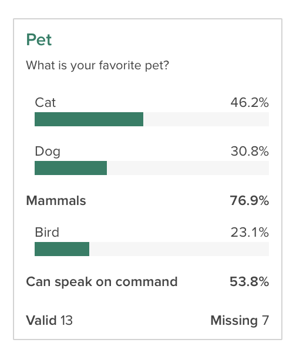

A common task in the market research world is to collapse two or more categories together to see how the collapsed categories compare to one another. For example, if you asked people to rate their preference on a scale of 1 to 10, you might want to see how the people who provide a rating between 1 and 5 compare to those who rated it between 6 and 10. This goes by a number of names, including “Top Box” or “Nets”, depending on the use case. In Crunch, we call this family of features Subtotals. This vignette shows how to define, manage, and analyze variables with subtotals.
Subtotals can be applied to any Categorical or Categorical Array
variable. In R, we can view and set subtotal definitions with the
subtotals() function. If there are no subtotals, the
function will return NULL:
subtotals(ds$q1)## NULLTo add subtotals, we can assign a list of Subtotal
objects. Each Subtotal object has three things: a
name to identify it; a set of categories to
pool together, referenced either by category name or id; and a location
to show it, either after a given category or with
position="top" or "bottom" to pin it first or
last in the list.
subtotals(ds$q1) <- list(
Subtotal(
name = "Mammals",
categories = c("Cat", "Dog"),
after = "Dog"
),
Subtotal(
name = "Can speak on command",
categories = c("Dog", "Bird"),
after = "Bird"
)
)Now, if we check subtotals(), we can see that we have
saved them. In this output we see a few different aspects of subtotals:
the anchor is the id of the category to put the subtotal
after (matching the after or position argument
in Subtotal()), name, aggregation functions and
args, which in the this case are the category ids to
include in the subtotal.
subtotals(ds$q1)## anchor name func args kwargs
## 1 2 Mammals subtotal 1 and 2 positive: 1 and 2 |
## 2 3 Can speak on command subtotal 2 and 3 positive: 2 and 3 |This shows up in the Categorical variable card on the web app like this:

Crunch also supports “Subtotal Differences” (sometimes also called
“Net Promoter Scores”122). The negative argument of
Subtotal specifies which categories to subtract.
Multiple Response variables can also have subtotals. To specify, use the alias or name of the subvariables as the categories.
Subtotals and headings can be removed by assigning a
NULL value.
subtotals(ds$like_dogs) <- NULLSometimes there are a number of questions that have the same response categories. If the category names (or ids, if we’re using those) are the same, we can use the same set of subtotals across multiple variables.
pet_type_subtotals <- list(
Subtotal(
name = "Love minus Dislike & Hate",
categories = c("Love"),
negative = c("Dislike", "Hate"),
position = "top"
)
)Notice here, because each of the categories for these variables has
slightly different ids, the args in the output differs
slightly. But, because we used category names when we were constructing
our list of subtotals, when we store them on the variable itself, Crunch
does the right thing and converts them over to the correct ids.
subtotals(ds$like_dogs)## anchor name func args kwargs
## 1 top Love minus Dislike & Hate subtotal 1 positive: 1 | negative: 4 and 5
subtotals(ds$like_cats)## anchor name func args kwargs
## 1 top Love minus Dislike & Hate subtotal 5 positive: 5 | negative: 2 and 1Now that we have defined subtotals on the congressional approval question, if we use it in a crosstab, we can see the subtotals.
crtabs(~like_dogs, data = ds)##
##
## Love minus Dislike & Hate 0
## Love 4
## Like 4
## Neutral 8
## Dislike 2
## Hate 2We can even get just the subtotals as an array from the result if we want to ignore the constituent groups:
subtotalArray(crtabs(~like_dogs, data = ds))## Love minus Dislike & Hate
## 0If you don’t want to see the subtotals as part of these summaries,
you can suppress them from display with the noTransforms()
function around crtabs().
noTransforms(crtabs(~like_dogs, data = ds))## like_dogs
## Love Like Neutral Dislike Hate
## 4 4 8 2 2This does not modify the variable—the subtotals are still defined and visible in the web app—but they are removed from the current analysis.
Headings and Summary Statics are supported only by rcrunch and cannot
be sent to the server. Therefore, they are only useful when working on
cube objects that you’ve already requested. The
Heading and addSummaryStat functions help you
make these kinds of insertions.
# addSummaryStat is a convenient way to add mean/median
addSummaryStat(crtabs(~q1, ds), margin = 1)##
##
## Cat 6
## Dog 4
## Mammals 10
## Bird 3
## Can speak on command 7
## mean 1.76923076923077
cube <- crtabs(~q1, data = ds)
transforms(cube)$q1$insertions <- list(Heading("Mammals", position = "top"), Heading("Other", after = "Dog"))
cube##
##
## Mammals
## Cat 6
## Dog 4
## Other
## Bird 3